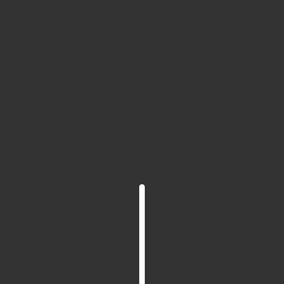

Fractal Tree
~with recursion~
Fractal is a set whose dimension is a fraction and not an integer. For example, a square or circle are 2D, or a sphere is 3D. But a fractal set, like Julia set is 1.2D. Wikipedia says:
A fractal is a subset of a Euclidean space for which the Hausdorff dimension strictly exceeds the topological dimension.
Uf, Enough of maths. In simple words, a fractal is a self-similar structure i.e. a small part of the structure looks similar to the whole. Like a Tree. A branch of a tree looks like a small version of a tree. Using this idea, we can draw trees by drawing a stem and attaching smaller trees to it which are drawn by drawing a smaller stem and attaching even smaller trees to it which again are drawn .....
If we carry out this process for an infinite time, we will get the true fractal tree. But we do not have that much of patience now, do we? So we will stop at some point by drawing leaves. Look at the gif below. The new small trees are attached to the stem at an angle of $\theta$ which is taken as $\pi/2$ here.
Following is an interactive p5.js sketch of this fractal tree where you can change the value of angle $\theta$ using the slider below. Try it out.
Usually, the real trees do not have so much symmetry as it is there above. To make it more realistic, we can add new trees at a random angle with respect to the stem. Check out the sketch below. Also, that random angle changes according to the Perlin noise which gives us the swaying effect of the tree.
Now, that looks much more realistic. Even though every stem has only two branches :p. That can be taken care of by generating new branches probabilistically. Check out the javascript code from the source of this webpage or at my Github repository.